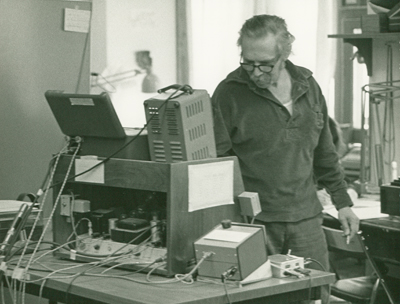

Joseph McMoneagle, one of the most successful Army-trained remote viewers, peered into the past to look into the possible origins of human history. To everyone’s surprise, he “saw” something quite different from the evolution of intelligent apes. Instead we observed that we were fabricated. We were cultivated and our DNA were created by intelligent beings in what he called a ‘laboratory.’
These intelligent beings are quite different from most of the creatures that zoom about the earth and watch and monitor us from afar. These are our “creators”. As such, they are known as the “progenitors”.
Not much is known of them.
They are a big mystery to everyone.
Any communication by MAJestic with our benefactors, and other aligned intelligence's hardly broach this subject. What is known is that our benefactors are aware of this species. But, they decline to tell us much of anything about them. The entire issue is not all that important to them.
Thus the only way that we can learn about them is through Remote Viewing.
Remote viewing (RV) is the practice of seeking impressions about a distant or unseen target, purportedly using extrasensory perception (ESP) or "sensing" with the mind. Remote viewing experiments have historically been criticized for lack of proper controls and repeatability. There is no scientific evidence that remote viewing exists, and the topic of remote viewing is generally regarded as pseudoscience. - Remote viewing - Wikipedia
Introduction
The true origins of human history remain a mystery.
However, that’s not what mainstream academia would have us believe. Ever since Darwin, human evolution and ‘the survival of the fittest’ has been promoted as THE scientific truth. This is the case, despite the fact that it remains a theory with multiple problems. If you question the theory, in certain circumstances, you are almost always considered a nut.
This continues to happen in many different fields of knowledge. It’s human nature don’t you know. You see, when you question beliefs that have been accepted by the group consensus, you will pretty much be considered a heretic.
What we won’t hear about is the fact that there are several hundred scientists, if not several thousand, who have spoken up against the scientific validity of the theory of evolution.
- Over 500 Scientists Proclaim Their Doubts About Darwin’s …
- History of Darwins & Arguments against Evolution – The …
- Dubitable Darwin? Why Some Smart, Nonreligious People …
- Arguments against evolution, and why they’re wrong
- Some Real Scientists Reject Evolution
- Dissent from Darwin – There is a scientific dissent from …
- Objections to evolution – Wikipedia
- Arguments Against Evolution – BiologyWise
Our DNA Originated Somewhere Else
One of the founding fathers of DNA, Francis Crick, believed that human DNA must have originated from somewhere else in the galaxy. He believed that…
“...organisms were deliberately transmitted to earth by intelligent beings on another planet.” -Collective Evolution
Other researchers are also admitting that this is a strong possibility. After all, with the discovery of many very old solar systems that have rocky planets, it makes sense that other intelligence’s would evolve, develop and achieve space-travel ability.
“With the rapidly increasing number of exoplanets that have been discovered in the habitable zones of long-lived red dwarf stars (Gillon et al., 2016), the prospects for genetic exchanges between life-bearing Earth-like planets cannot be ignored. ” -The study
There is a great little blurb from Cosmos Magazine, one of the few outlets who is talking about the study.
Serious inquiry into the origins of human history are not encouraged in the mainstream sciences. Yet as we dig a little on what’s being done, there is a lot to consider. As there are new theories and discoveries that seem to be popping up every single year. Unfortunately, modern day education is not keeping up with this, and in fact continues to promulgate old theories and notions that have long been disproven.
As a result, nobody beyond ardent self-motivated researchers are learning about new developments or have any knowledge of these viewpoints.
Consider entertaining new ideas without necessarily accepting them, just give them a chance to swirl in your mind a bit.
The StarGate Program
The information obtained via Remote Viewing comes from declassified documents from a classified program known as “StarGate”. To understand what is going on, we have to cover what the “StarGate Program” was.
The StarGate program was co-founded by a number of individuals who worked in Deep Black SAP programs. Here’s some of the more notable people.
- Russell Targ (watch his banned TED talk about ESP here).
- Hal Puthoff, who is now a member of the ‘To The Stars Academy’.
- Tom Delonge.
Stargate Project was the 1991 code name for a secret U.S. Army unit established in 1978 at Fort Meade, Maryland, by the Defense Intelligence Agency and SRI International to investigate the potential for psychic phenomena in military and domestic intelligence applications. The Project, and its precursors and sister projects, originally went by various code names—GONDOLA WISH, GRILL FLAME, CENTER LANE, SUN STREAK, SCANATE—until 1991 when they were consolidated and rechristened as "Stargate Project". - Wikipedia
The StarGate program investigated parapsychological phenomenon.
These phenomenon included things like remote viewing, telepathy, telekinesis, and clairvoyance. The program yielded high statistically significant results and was used multiple times for intelligence gathering purposes.
Parapsychological phenomenon, also called PSI phenomenon, any of several types of events that cannot be accounted for by natural law or knowledge apparently acquired by other than usual sensory abilities. The discipline concerned with investigating such phenomena is called parapsychology. - Parapsychological phenomenon | Britannica.com
A lot of interesting information came out of the literature that was declassified in 1995 after the program ran. It was a copus amount of data for certain. As the program ran for more than two decades straight. In fact, much more repeatable than “normal” findings in the hard sciences. It has a success rate of over 80 percent.
Remote viewing was how the rings around Jupiter were actually discovered by Ingo Swann before NASA was able to measure them. (You can read more about that here.)
To summarize, over the years, the back-and-forth criticism of protocols, refinement of methods and successful replication of this type of remote viewing in independent laboratories has yielded considerable scientific evidence for the reality of the [remote viewing] phenomenon. Adding to the strength of these results was the discovery that a growing number of individuals could be found to demonstrate high-quality remote viewing, often to their own surprise. . . . The development of this capability at SRI has evolved to the point where visiting CIA personnel with no previous exposure to such concepts have performed well under controlled laboratory conditions.” -source
The Breadth Of Remote Viewing
Remote Viewing is not something that can be easily dismissed. It is repeatable, is is confirm-able, and it has been used with success in the military, political, and economic industries.
There are examples in the literature, from remote viewers looking at classified Russian technology during the cold-war era, locating a lost spy plane in Africa and the prediction of future events. Yes, along with remote viewing comes the ability to view into the past, and view into the future.
Remote viewing allows the user to view things irregardless of physical space, and the constraints of time.
Joseph McMoneagle.
The individual who conducted the Remote Viewing in the StarGate program that uncovered the Progenitors and the origin of humanity is a researcher known as Josepth McMoneagle.
Let it be well understood that this program was large, well-funded, and placed under the tightest security classifications. In fact, some of the results are still classified to this day.
As a big program, there were multiple people working within the Remote Viewing Program. This program was conducted at Stanford Research Institute (SRI) in conjunction with multiple intelligence agencies. Think of the CIA and NSA sharing resources with private (“carve outs”) civilian institutions. It was sort of like that.
One of the key people working in this program was Joseph McMoneagle.
SRI International is an American nonprofit scientific research institute and organization headquartered in Menlo Park, California. The trustees of Stanford University established SRI in 1946 as a center of innovation to support economic development in the region. The organization was founded as the Stanford Research Institute. SRI formally separated from Stanford University in 1970 and became known as SRI International in 1977. SRI performs client-sponsored research and development for government entities. - SRI International - Wikipedia
Joseph was one of the most successful Army-trained remote viewers, and one of the original members of project Stargate.
Joseph McMoneagle (born January 10, 1946, in Miami, Florida) is a retired U.S. Army NCO and Chief Warrant Officer. He was involved in "remote viewing" (RV) operations and experiments conducted by U.S. Army Intelligence and the Stanford Research Institute. - Joseph McMoneagle - Wikipedia
Joseph was actually awarded the Legion of Merit for “producing crucial and vital intelligence unavailable from any other source” to the intelligence community.
The Legion of Merit is a military award of the United States Armed Forces that is given for exceptionally meritorious conduct in the performance of outstanding services and achievements. The decoration is issued to members of the seven uniformed services of the United States as well as to military and political figures of foreign governments. - Wikipedia
The Origins Of Humanity
Now with that preliminary background out of the way, imagine this ‘StarGate Program” also acquired scientists and researchers outside of the “Carve Outs”.
One such researcher was Robert A. Monroe.
In 1983, McMoneagle worked with Robert A. Monroe, on numerous projects. Robert was the founder of the Monroe Institute. It was a research institute located in Faber, Virginia. This Monroe Institute provided basic out-of-body orientation for many of the military remote viewers.
Robert A. Monroe, well known author of groundbreaking books on the subject of out-of-body experiences (OBE) and human consciousness exploration, founded the Institute as a means to study and utilize the OBE skills he had begun to develop spontaneously. - Welcome to Monroe Institute | The Monroe Institute
There, he conducted a session seeking to discover the origin of humanity.
As the late great author and researcher Jim Marrs points out in his best selling book Our Occulted History points out:
During the 129-minute session, he described a shoreline on what appeared to him to be a primitive Earth. He later estimated a time of about thirty million to fifty million years after the time of the dinosaurs. Cavorting on this shoreline was a large family of protohumans-hairy animals about four feet in height, walking upright and possessing eyes exhibiting a spark of intelligence despite a somewhat smaller cranial capacity. Two things surprised McMoneagle in this session. These creatures appeared to be aware of his psychic presence, and they did not originate at that location.
McMoneagle described his experience in his 1998 book, The Ultimate Time Machine:
This particular species of animal is put…specifically in that barrier place…called the meeting of the land and the sea…I also get the impression that they’re…ah…they were put there.
They mysteriously appeared. They are not descended from an earlier species, they were put there (by a) seed ship…no, that’s not right. Keep wanting to say ship, but it’s not a ship. I keep seeing a…myself…I keep seeing…oh, hell, for lack of a better word, let’s call it a laboratory, where they are actually inventing these creatures.
They are actually constructing animals from genes. Why would they be doing that? Can we do this yet…here and now? Like cutting up genes and then pasting them back together. You know, sort of like splicing plants…or grafting them, one to another…Interesting, it’s like they are building eggs by injecting stuff into them with a mixture of DNA or gene parts of pieces.
This was transcribed in the 1970’s.

This viewing occurred in 1983. It was long before the gene splicing, and DNA editing techniques were discovered, invented, and utilized.
Dolly (5 July 1996 – 14 February 2003) was a female domestic sheep, and the first mammal cloned from an adult somatic cell, using the process of nuclear transfer. - Dolly (sheep) - Wikipedia
McMoneagle described these creatures as delicate-looking aquiline-featured humanoids, unclothed, in possession of a prehensile tail and large “doe-like” eyes. They seemed to be using some sort of light that McMoneagle had a hard time describing, but eventually described it as a “grow light.”
Marrs got the impression that it was like someone tending to a garden, and planting seeds, but “there isn’t any concern about the seeds after they are planted…It’s simply like…well…put these seeds here and on to better and bigger business. No concern about backtracking and checking on the condition of the seeds. They can live or die, survive or perish.” The session ended with him moving closer in time and perceiving these beings growing in size and ability, eventually becoming herding humans.
The surveillance of and interference with humanity is documented in the lore of almost all civilizations that have roamed the planet. Although some have called this mere ‘interpretation,’ it reminds me of people referring to the confirmation of spiritual and metaphysical realms as a result of quantum physics. It is simply labelled as an interpretation due to the fact that it upsets so many belief systems and long-held preconceived ideas.
Today
StarGate supposedly began in 1972 but its “official” start was in 1990. Project Stargate involved a number of investigations into the paranormal by the CIA and partner organizations such as the DIA and INSCOM.
After the termination of Project Stargate, a new program was formed. This project was named Project Farsight.
As of 2017, Project Farsight is still an active operation.
Conclusion
I’m not saying this is exactly how humans are created.
All that I can say is that our Benefactors believe that the Progenitors had a hand in the creation of the human species. Aside from that, we know nothing else. Perhaps this glimpse into our creation via Remote Viewing can offer us some insight into this matter.
- Progenitors – Created the foundation for the human species.
- Benefactors – Presently involved in cultivating the human species.
Like an enormous 10,000 piece puzzle of great complexity, this is just another puzzle piece that might be able to fit into other already confusing puzzle pieces.
Some interesting Links
Here are some links in regards to the observation of early humans through remote viewing techniques.
- Research Files – Remote Viewing Research
- Stargate Project – Wikipedia
- REMOTE VIEWING | Ingo Swann
- Top 10 Spookiest Declassified Project Stargate Documents …
- STARGATE was a CIA project on remote viewing.
MAJestic Related Posts – Training
These are posts and articles that revolve around how I was recruited for MAJestic and my training. Also discussed is the nature of secret programs. I really do not know why the organization was kept so secret. It really wasn’t because of any kind of military concern, and the technologies were way too involved for any kind of information transfer. The only conclusion that I can come to is that we were obligated to maintain secrecy at the behalf of our extraterrestrial benefactors.


MAJestic Related Posts – Our Universe
These particular posts are concerned about the universe that we are all part of. Being entangled as I was, and involved in the crazy things that I was, I was given some insight. This insight wasn’t anything super special. Rather it offered me perception along with advantage. Here, I try to impart some of that knowledge through discussion.
Enjoy.


Utilizing Intention


Influencer Questions
Here are posts that have gathered a series of questions from various influencers. They are interesting in many ways and could help all of us unravel the mysteries of the lives that we live.


MAJestic Related Posts – World-Line Travel
These posts are related to “reality slides”. Other more common terms are “world-line travel”, or the MWI. What people fail to grasp is that when a person has the ability to slide into a different reality (pass into a different world-line), they are able to “touch” Heaven to some extent. Here are posts that cover this topic.


John Titor Related Posts
Another person, collectively known by the identity of “John Titor” claimed to utilize world-line (MWI egress) travel to collect artifacts from the past. He is an interesting subject to discuss. Here we have multiple posts in this regard.
They are;